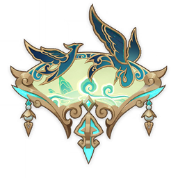

Weapons
Crane's Echoing Call
Crane's Echoing Call
A fan carved from pure jade, around which swirls an ancient aura of adeptal energy.
Stats:
| Asc. | Lv. | Base ATK | ATK% |
|---|---|---|---|
| A0 | 1 | 49 | 3.6% |
| A6 | 90 | 741 | 16.5% |
| Click to expand... | |||
Refinements:
| Refinement | Desc |
|---|---|
| Cloudfall Axiom R1 | After the equipping character hits an opponent with a Plunging Attack, all nearby party members' Plunging Attacks will deal 28% increased DMG for 20s. When nearby party members hit opponents with Plunging Attacks, they will restore 2.5 Energy to the equipping character. Energy can be restored this way every 0.7s. This energy regain effect can be triggered even if the equipping character is not on the field. |
| Cloudfall Axiom R2 | After the equipping character hits an opponent with a Plunging Attack, all nearby party members' Plunging Attacks will deal 80% increased DMG for 20s. When nearby party members hit opponents with Plunging Attacks, they will restore 3.5 Energy to the equipping character. Energy can be restored this way every 0.7s. This energy regain effect can be triggered even if the equipping character is not on the field. |
| Click to expand... | |
Ascensions:
| Asc. | Mora | Items | ||
|---|---|---|---|---|
| A6 | 65000 | |||
| Click to expand... | ||||
Lore:
This was in the distant past, before the prosperous port city was ever established.
Then, even the abodes of the adepti were not spared from the flaming beacons of war.
The lords once worshipped as gods fought for reasons their own,
Blood and fire, separation and betrayal. All the mortal world was stained.
Those who lost everything in the tumult fled to the mountains, and there they begged for the adepti for shelter.
Doggedly pursuing those survivors were countless monsters who had long since lost their senses.
Their names were unknown, their numbers uncountable, they came on like a flood, destroying all in their path.
The other master that they had once revered had fallen, and their fierce roaring was, in truth, a final mourning howl.
But the mortals then could not have known that the lord who once defended these mountains and waters had now passed,
And that all that stood between them and the onrushing deluge of catastrophe were a few vigilant yaksha who dwelled there.
After several days of fierce battle, white clothes had turned scarlet, and scarlet garments had been stained black. Still, the monsters came on like an endless horde...
As this tale dates to days ancient beyond memory, the tale thereafter has branched out into many versions. Some say that just as all hung in the balance,
An adeptus with azure and white feathers burst from the clouds like a descending gale,
Solitary, solemn, silent, in proud majesty and dignity did this being defend and administer the forebears,
Turning a hopeless cause around by vanquishing what had appeared a limitless tide of monstrosities...
Others say that as things appeared most perilous, two jade-carved cranes hurtled from the skies above,
And in a hail of sigils did they subjugate countless evils as a chill wind disperses an expanse of cloud.
But when all turned to look, Lo! There were no cranes, but an adeptus airborne, folding fan in fair hand...
Still others claim that so far above mortal reach was this adeptus's might that the ancestors but heard a crane's cry,
And before them, the endless monsters were as ash in an instant, like dust that dissipates in the sunlight...
No matter which version of the tale, the people of Liyue thereafter would, when speaking of the adeptus Cloud Retainer,
Would never fail choose their words with some respect. And as for what really happened back then...
"Interested in such distant matters? You truly are a person of some leisure."
"Well, what with a similar mood being upon oneself, one shall speak of it."
"Now, one believes this tale may be naught but eight or nine hours in the telling, but you should pull a chair up, still..."
"...What? Were you trying to slink away while one was distracted!?"